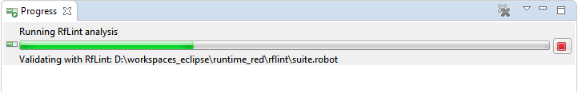
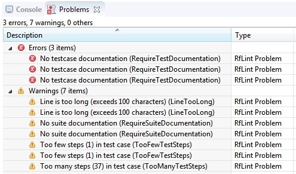
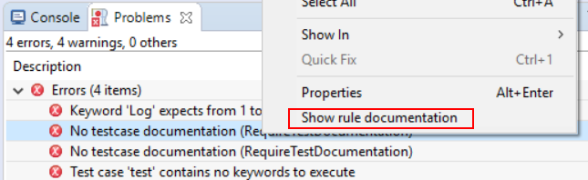

Starting with RED 0.8.1 it is possible to run Robot Framework Lint analysis tool. Of course one have to have it installed in the python installation used by the project.
RfLint can be run on selected file or folder (or whole project) in Project Explorer view. In order
to start analysis open context menu for selected resource and choose Robot Framework -> Run RfLint analysis.
The analysis should start and its progress is visible in Progress view. At any time you can abort running validation:
Analysis performed from RED is reporting all the findings as Problem markers of a separate type called RfLint Problem. This is a different type than those reported by standard RED validation mechanism (they have Robot Problem type). Overall this means that the findings are visible in Problems view and are also visible in editors.
In order to remove problems simply choose Robot Framework -> Clean RfLint problems from context menu
of selected resource.
It is possible to configure RfLint behavior in Preferences (
Window -> Preferences -> Robot Framework -> Errors/Warnings -> RfLint validation).
On General tab it is possible to define:

On Rules tab it is possible to configure rule severity as well as additional rule parameters.
It is possible to see the rule documentation straight from Problems view by using context menu action on given RfLint problem. The documentation will be displayed in Documentation view.
